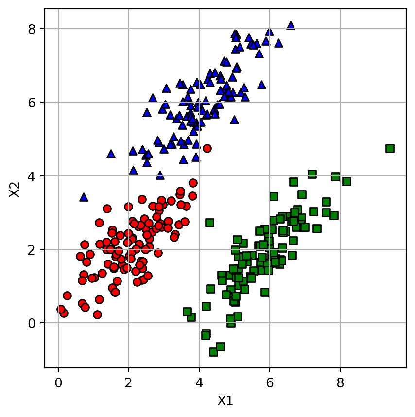
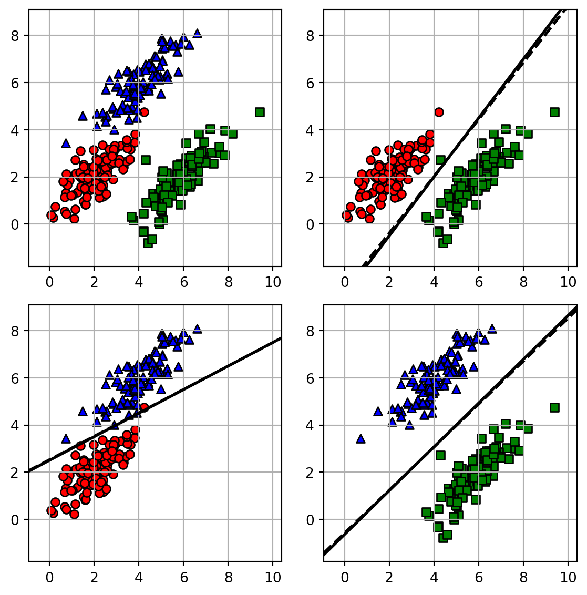

Introduction to Statistical Learning
Generative Models - Class 12
Giora Simchoni
gsimchoni@gmail.com and add #intro2sl in subject
Stat. and OR Department, TAU
Intro. to Generative Models
Generated images
How did we get here?
Discriminative models
- We are constanly trying to model \(E(Y|X = x)\) (regression) or \(P(Y|X = x)\) (Bayes classifier):
- Linear:
- linear regression, ridge, lasso
- logistic regression
- Non-linear:
- KNN
- Trees, RF, Boosting
Even our Bias-variance tradeoff analysis assumed a Fixed-\(X\) scenario!
Generative models
But for classification: \[P(Y | X) = \frac{P(X, Y)}{P(X)}\]
Generative models focus on modeling the joint distribution \(P(X, Y)\), or more specifically: \[P(Y | X) = \frac{P(X, Y)}{P(X)} = \frac{P(Y)P(X|Y)}{P(X)} \propto P(Y)P(X|Y)\]
Focus on the mechanism which generated the data, not just the data
Especially useful when \(n\) is small
Classification using generative models
Even more specifically, if \(Y \in \{1, \dots, K\}\): \[P(Y = k|X = x) = \frac{P(Y = k)P(X = x|Y = k)}{P(X = x)} = \frac{\pi_k f_k(x)}{\sum_{l = 1}^K \pi_l f_l(x)}\]
We focus on estimating \(\pi_k, f_k(x)\)
And if we are so good at estimaing \(f_k(x) = P(X = x|Y = k)\) why not generate more!
Detour: multivariate normal
Univariate normal
- \(X \in \mathbb{R} \sim \mathcal{N}(\mu, \sigma^2) \Rightarrow E(X) = \mu; \quad V(X) = \sigma^2 > 0\)
- \(f(x) = \frac{1}{\sqrt{2\pi\sigma^2}}\exp\left(-\frac{1}{2\sigma^2}(x-\mu)^2\right)\)
- \(F(x) = P(X \le x) = \int_{-\infty}^x f(x)dx = \Phi\left(\frac{x - \mu}{\sigma}\right)\)
Bivariate normal
- \(X \in \mathbb{R}^2 \sim \mathcal{BVN}(\mathbf{\mu}, \mathbf{\Sigma}) \Rightarrow E(X) = \mu = \begin{pmatrix}\mu_1 \\ \mu_2\end{pmatrix}; \quad V(X) = \mathbf{\Sigma} = \begin{pmatrix}\sigma_1^2 & \rho\sigma_1\sigma_2 \\ \rho\sigma_1\sigma_2 & \sigma_2^2\end{pmatrix}\)
- \(\Leftrightarrow X_1 \sim \mathcal{N}(\mu_1, \sigma_1^2), X_2 \sim \mathcal{N}(\mu_2, \sigma_2^2); \quad \rho = \text{Cor}(X_1, X_2) = \frac{\text{Cov}(X_1, X_2)}{\sigma_1\sigma_2}\)
- \(f(x) = f(x_1, x_2) = \frac{1}{2\pi \sigma_1 \sigma_2 \sqrt{1 - \rho^2}} \exp\left( -\frac{1}{2(1 - \rho^2)} \left[ \frac{(x_1 - \mu_1)^2}{\sigma_1^2} + \frac{(x_2 - \mu_2)^2}{\sigma_2^2} - \frac{2\rho(x_1 - \mu_1)(x_2 - \mu_2)}{\sigma_1 \sigma_2} \right] \right)\)
- \(F(x) = P(X_1 \le x_1, X_2 \le x_2) = \int_{-\infty}^{x_2}\int_{-\infty}^{x_1}f(x_1, x_2)dx_1 dx_2\)
Multivariate normal
- \(X \in \mathbb{R}^p \sim \mathcal{MVN}(\mathbf{\mu}, \mathbf{\Sigma})\)
- \(E(X) = \mu = \begin{pmatrix}\mu_1 \\ \vdots \\ \mu_p\end{pmatrix}; \quad V(X) = \mathbf{\Sigma} = \begin{pmatrix}\sigma_1^2 & \dots & \rho_{1,p}\sigma_1\sigma_p \\ \vdots & \ddots & \vdots \\ \rho_{1, p}\sigma_{1}\sigma_{p} & \dots & \sigma_p^2\end{pmatrix}\)
- \(\Leftrightarrow X_1 \sim \mathcal{N}(\mu_1, \sigma_1^2), \dots, X_p \sim \mathcal{N}(\mu_p, \sigma_p^2); \quad \rho_{j,k} = \text{Cor}(X_j, X_k) = \frac{\text{Cov}(X_j, X_k)}{\sigma_j\sigma_k}\)
- \(f(x) = f(x_1, \dots, x_p) = \frac{1}{(2\pi)^{p/2}|\Sigma|^{1/2}}\exp\left(-\frac{1}{2}(x - \mu)^T\Sigma^{-1}(x-\mu)\right)\)
How many unique params in \(\mathbf{\Sigma}\)?
Linear Discriminant Analysis
Linear discriminant analysis (LDA)
Recall: \[P(Y = k|X = x) = \frac{P(Y = k)P(X = x|Y = k)}{P(X = x)} = \frac{\pi_k f_k(x)}{\sum_{l = 1}^K \pi_l f_l(x)}\]
\(\hat{f}(x_0) = \arg\max_k \pi_k f_k(x_0)\)
- In LDA:
- \(\pi_k\) are priors, or (spoiler): \(\hat{\pi}_k = \frac{\sum_{i = 1}^n \mathbb{I}\left[Y_i = k\right]}{n}\)
- \(f_k(x)\) are multivariate Gaussian, or: \(X | Y = k \sim \mathcal{N}(\mu_k, \Sigma)\)
- Notice the covariance matrix \(\Sigma\) is the same \(\forall k\)
LDA: What to expect

What do you expect the decision rule(s) to look like?
LDA: \(k-j\) classes decision rule
- Why choose class \(k\) over \(j\)? \(P(Y = k|X = x) > P(Y = j|X = x) \Leftrightarrow \pi_kf_k(x) > \pi_jf_j(x) \Leftrightarrow \log\left[\pi_kf_k(x)\right] > \log\left[\pi_jf_j(x)\right]\)
- Assume \(\pi_k, \pi_j, \mu_k, \mu_j, \Sigma\) known
- \(X | Y = k \sim \mathcal{N}(\mu_k, \Sigma) \Rightarrow f_k(x) = \frac{1}{(2\pi)^{p/2}|\Sigma|^{1/2}}\exp\left(-\frac{1}{2}(x - \mu_k)^T\Sigma^{-1}(x-\mu_k)\right)\)
- \(\log\left[\pi_kf_k(x)\right] = \log(\pi_k) + \log(f_k(x)) = \log(\pi_k) + C -\frac{1}{2}(x - \mu_k)^T\Sigma^{-1}(x-\mu_k)\)
LDA: \(k-j\) classes decision rule
So, select class \(k\) over class \(j\) if \(\log\left[\pi_kf_k(x)\right] > \log\left[\pi_jf_j(x)\right]\) means:
\[\log(\pi_k) -\frac{1}{2}(x - \mu_k)^T\Sigma^{-1}(x-\mu_k) > \log(\pi_j) -\frac{1}{2}(x - \mu_j)^T\Sigma^{-1}(x-\mu_j)\]
\[\delta_{k > j}(x): x^T\Sigma^{-1}(\mu_k - \mu_j) + \left[-\frac{1}{2}\mu_k^T\Sigma^{-1}\mu_k +\frac{1}{2}\mu_j^T\Sigma^{-1}\mu_j + \log(\pi_k) - \log(\pi_j)\right]> 0\]
What shape is \(\delta_{k > j}(x)\)?
LDA: Estimation
- If we want to fit LDA to data, we need to estimate the parameters: \(\mu_1,\ldots,\mu_K,\; \Sigma,\; \pi_1,\ldots,\pi_K.\)
- This is naturally done from the data (e.g. by maximum likelihood): \[\begin{eqnarray*} \hat{\pi}_k &=& \frac{\sum_{i=1}^n \mathbb{I}\left[Y_i = k\right]}{n} \;,\; \hat{\mu}_k = \frac{\sum_{\mathbb{I}\left[Y_i = k\right]} x_i}{\sum_{i=1}^n \mathbb{I}\left[Y_i = k\right]}\\ \hat{\Sigma} &=& \frac{1}{n-K} \sum_{k=1}^K \sum_{\mathbb{I}\left[Y_i = k\right]} (x_i-\hat{\mu}_k) (x_i-\hat{\mu}_k)^T \end{eqnarray*}\]
LDA: Example

Quadratic Discriminant Analysis
A common covariance?
Quadratic linear analysis (QDA)
- Now assume: \(X | Y = k \sim \mathcal{N}(\mu_k,\)\(\Sigma_k\) \()\)
- Decision rule stays the same:
- select class \(k\) over class \(j\) if \(\log\left[\pi_kf_k(x)\right] > \log\left[\pi_jf_j(x)\right]\)
- \(\log\left[\pi_kf_k(x)\right] = \log(\pi_k) + C -\frac{1}{2}(x - \mu_k)^T\)\(\Sigma_k^{-1}\)\((x-\mu_k)\) \(-\frac{1}{2}\log(|\Sigma_k|)\)
\[\begin{align} \delta_{k > j}(x)&: \\ &-\frac{1}{2}x^T\left(\Sigma_k^{-1} - \Sigma_j^{-1}\right)x + x^T\left(\Sigma_k^{-1}\mu_k - \Sigma_j^{-1}\mu_j\right) \\ &+ \left[-\frac{1}{2}\mu_k^T\Sigma^{-1}\mu_k +\frac{1}{2}\mu_j^T\Sigma^{-1}\mu_j + \log(\pi_k) - \log(\pi_j) + \frac{1}{2}\left(\log(|\Sigma_j| -\log(|\Sigma_k|)\right)\right]> 0 \end{align}\]
What shape is \(\delta_{k > j}(x)\)?
QDA: Estimation
- Estimate \(\mu_k, \pi_k\) as in LDA and:
- \(\hat{\Sigma}_k = \frac{1}{n_k-1} \sum_{\mathbb{I}\left[Y_i = k\right]} (X_i-\hat{\mu}_k) (X_i-\hat{\mu}_k)^T\)
How many params are estimated in QDA? LDA?
Naive Bayes
Naive Bayes
- Recall: \(P(Y = k|X = x) = \frac{P(Y = k)P(X = x|Y = k)}{P(X = x)} = \frac{\pi_k f_k(x)}{\sum_{l = 1}^K \pi_l f_l(x)}\)
- In Naive Bayes:
- \(\pi_k\) are priors, or: \(\hat{\pi}_k = \frac{\sum_{i = 1}^n \mathbb{I}\left[Y_i = k\right]}{n}\)
- Within the \(k\)-th class, the \(p\) predictors are independent
- \(f_k(x) = f_{k1}(x_1) \times f_{k2}(x_2) \times \dots \times f_{kp}(x_p)\)
- \(f_{kj}(x_j)\) for a continuous feature: \(\mathcal{N}(\mu_{jk}, \sigma_{jk}^2)\), \(Exp(\lambda_{jk})\), KDE, …
- \(f_{kj}(x_j)\) for a discrete feature: \(\hat{f}_{kj}(x_j)=\begin{cases} 0.2 & \text{if $x_j = 1$} \\ 0.8 & \text{if $x_j = 2$} \end{cases}\)
We don’t really believe this independence… when is this naive assumption particularly useful?
How is Naive Bayes = LDA/QDA?
Comparing classifiers
Example: SAHeart data
LDA vs. logistic regression
- For \(K = 2\) (though we can show this for any \(K\)), logistic regression: \[\text{logit}(P(Y = 1|X)) = \log\left(\frac{P(Y = 1|X)}{1 - P(Y = 1|X)}\right) = \log\left(\frac{P(Y = 1|X)}{P(Y = 0|X)}\right) = \beta_0 + x^T\beta\]
- For \(K = 2\) (though we can show this for any \(K\)), LDA: \[\begin{align}\log\left(\frac{P(Y = 1|X)}{P(Y = 0|X)}\right) &= \log\left(\frac{\pi_1 f_1(x)}{\pi_0 f_0(x)}\right) = \log(\pi_1 f_1(x)) - log(\pi_0 f_0(x)) \\ &= x^T\Sigma^{-1}(\mu_1 - \mu_0) + \left[-\frac{1}{2}\mu_1^T\Sigma^{-1}\mu_1 +\frac{1}{2}\mu_0^T\Sigma^{-1}\mu_0 + \log(\pi_1) - \log(\pi_0)\right] \\ &= \alpha_0 + x^T\alpha\end{align}\]
Similarly for all methods
\(\delta_{1 > 0}(x) = \log\left(\frac{P(Y = 1|X = x)}{P(Y = 0|X = x)}\right) =\)
| method | type | \(\delta_{1 > 0}(x)\) |
|---|---|---|
| LR | discriminative, linear | \(\beta_0 + x^T\beta\) |
| LDA | generative, linear | \(\alpha_0 + x^T\alpha\) |
| QDA | generative, non-linear | \(\gamma_0 + x^T\gamma + x^T\Gamma x\) |
| NB | generative, non-linear | \(\tau_0 + \sum_{j = 1}^p \tau_j(x_j)\) |